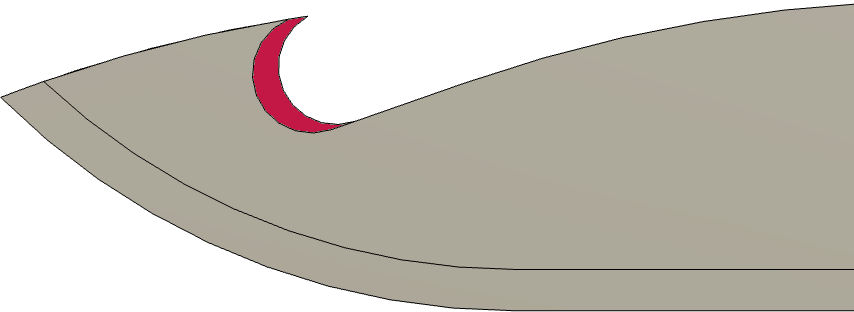

|
|
|
Hori Hori Gardening Knives |
Hori Hori Gardening Knife

Edge Angle |
|
I have never had so many good ideas day after day as when I worked in the garden. John Erskine |
The Japanese Hori Hori Gardening Knives, also known as Soil Knives, are used in the garden for many activities, including digging, cutting, weeding, & planting. ("Hori hori" means "to dig" in Japanese.)
Guidelines shown below are for Included Angles (α). The two edges could be sharpened differently, but that is not typically done.
There can be a debate about how sharp the hori hori knife should be. Notes regarding this are below in the Notes & Comments section.
|
General Guidelines |
||
|---|---|---|
| α |
Micro bevel |
Notes |
| 20° | +5° |

Gut Hook The inside edge will need to be deburred using a machinist's hand file or a sharpening stone. The use of a micro/secondary bevel makes the re-sharpening easier and faster, particularly if done in the field. Note: Some blades have a hooked blade used for cutting twine. This is similar to a hunting knive's gut hook used splitting the skin on a game animal when butchering in the field. Sharpening this concave edge requires a round slip stone or sandpaper wrapped around a dowel rod. |
The gardener needs to decide how sharp the hori hori knife should be based on activities for which the tool will be used. Some of the decision criteria worth considering are outlined below.
If the gardener wants to use the hori hori knife for these activities, then making it less sharp is recommended.
If the gardener wants to use the hori hori knife for these activities, then making it quite sharp is recommended.
Cautions: depending on how the gardener uses the tool's sheath for encasing the blade, having a very sharp blade makes it easy for the gardener to:
Morakniv knife
Alternatively, the gardener could use a different tool such as a fixed blade knife like a Morakniv or Bowie knife for these activities.
The Tormek SG-250 grindstone works well for sharpening this tool. Also, grinding the outside edge using the Tormek's vertical position (with the grindstone rotating towards the edge) is recommended.
Because the blade is curved, the KS-123 does not work for this application.
Using a bench or angle grinder is not recommended as this will surely overheat the tool, removing the temper from the edge. Additionally, the shaping of the edge is difficult to control.

KJ-45 Bottom Stop
If using a Tormek with the KJ-45 jig, the bottom stop is recommended (as indicated in the picture to the left). This makes setting the angle far easier.
The picture on the right shows a Japanese weeding sickle being sharpened on a Tormek (the blue piece behind the grinding wheel is a drip tray).
If you choose to use a machinist’s hand file,
The micro bevel makes the resharpening of this tool easier. If you sharpen the tool using a machinist's hand file, this is recommended. It is less critical if you use a Tormek grinder for the sharpening.